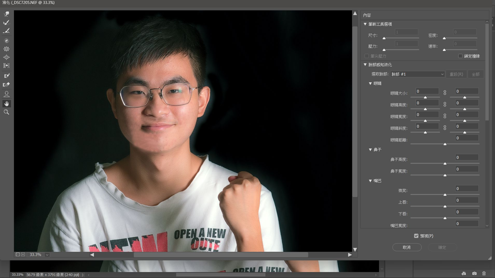
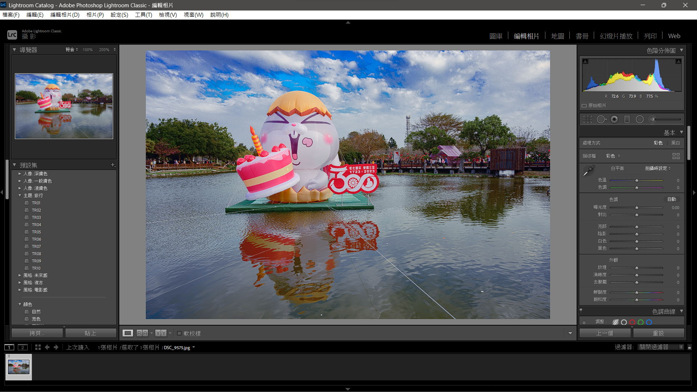

證件照
簡介:
證件照是人像攝影的基礎，這節社課將會教大家使用社上的棚燈及簡單的引導模特表情技巧。

人像寫真
簡介:
學會引導模特表情後，將會帶大家深入引導模特的一些動作姿勢，也適時加上一些道具輔佐，讓相片更生動。

Photoshop
簡介:
說到人像攝影不外乎也要學點修圖，這節課將會教大家使用photoshop學習去痘痘、調整臉型等等修飾人像的技巧。

重力攝影
簡介:
構圖是攝影裡能多元發揮的技巧，這堂課將會帶大家深入用不同的構圖技巧去拍出一些與平常不同的視角。

高速閃燈
簡介:
這堂課將會帶大家用高速快門搭配閃燈將物品移動的瞬間拍出凝結感。


Lightroom
簡介:
Lightroom是修圖中很方便的調色工具，這節課將會帶大家認識LR的一些調色功能。

運動攝影
簡介:
這節課將會帶大家學習運用快門的調整及對焦的技巧，幫運動員拍出最帥的一刻。

底片放大
簡介:
這次社課將會帶大家了解放大機的一些知識技巧，將底片洗出來後的影像轉成平常常見的大小。